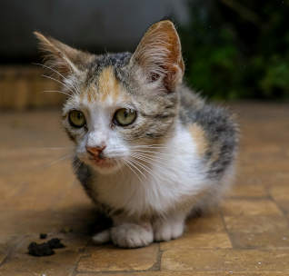

Nosso Objetivo
Imagine um grupo de pessoas unidas pelo amor aos animais, resgatando aqueles que foram deixados para trás e dando-lhes uma nova chance. Eles oferecem cuidados médicos, abrigo temporário cheio de carinho e procuram um lar definitivo onde esses bichinhos possam ser felizes. Com cada resgate, eles não só salvam vidas, mas também reacendem a esperança e mostram que a compaixão ainda existe. Cada animalzinho encontra não só um lar, mas também um novo começo cheio de amor e alegria.